| Przedmiot | APPDB – laboratorium 1 |
|---|---|
| Zespół (2 os.) | 1. …………………………… 2. …………………………… |
| Scenariusz | Sklep internetowy (zamówienia, reklamacje, zwroty, pytania klientów) |
| Data | 21.10.2026 |
| Środowisko | Local 10.2 · WordPress 7.1.3 · WooCommerce 11.2.1 · PHP 8.2.29 · MySQL 8.4.0 · nginx 1.26.1 |
KawaNaKlik to fikcyjny, mały sklep internetowy ze świeżo paloną kawą i akcesoriami do parzenia. Firma zatrudnia 3 osoby: właściciela, osobę od obsługi klienta i magazyniera. Sprzedaje kawę ziarnistą i mieloną, akcesoria (drippery, młynki, filtry) oraz zestawy prezentowe. Wysyła towar kurierem na terenie Polski, a od 199 zł dostawa jest darmowa.
Codzienna praca, którą chcemy usprawnić automatyzacją:
Sklep działa na WordPressie z wtyczką WooCommerce, uruchomionym lokalnie w aplikacji Local. W kolejnych etapach zostanie połączony z n8n, Google Sheets, modelem językowym i dashboardem w Looker Studio.
.test, której nie da się zarejestrować. Nie użyliśmy żadnych prawdziwych danych osobowych. Dzięki temu dane testowe nie podlegają RODO, a cały sklep można bezpiecznie udostępniać prowadzącemu i narzędziom AI.| Etap | Zakres | Status |
|---|---|---|
| I | Instalacja i konfiguracja środowiska: Local, WordPress, WooCommerce, dane syntetyczne | wykonany |
| II | n8n (Docker / chmura): eksport zamówień z WooCommerce do Google Sheets | planowany |
| III | LLM (Gemini / Ollama): klasyfikacja wiadomości klientów (reklamacja / zwrot / pytanie) i szkic odpowiedzi | planowany |
| IV | Automatyzacja zwrotów i alertów magazynowych (niski stan → powiadomienie) | planowany |
| V | Dashboard w Looker Studio: sprzedaż, statusy zamówień, reklamacje | planowany |
Celem etapu było postawienie działającego, lokalnego sklepu internetowego, który będzie źródłem danych dla automatyzacji w etapach II–V. Sklep miał mieć:
kawanaklik.local, nginx, PHP 8.2.29, MySQL 8.4.0./%postname%/, czyli przyjaznych adresów dla REST API WooCommerce, z którego skorzysta n8n.Local to darmowe narzędzie, które jednym kliknięciem stawia lokalny serwer WWW, PHP i bazę MySQL, a potem instaluje na nim WordPressa. Nie trzeba przy tym ręcznie konfigurować XAMPP-a ani Dockera. Na komputerze działała już wcześniej inna strona (CyberTarcza). Dla tego projektu dodaliśmy nową, osobną stronę.
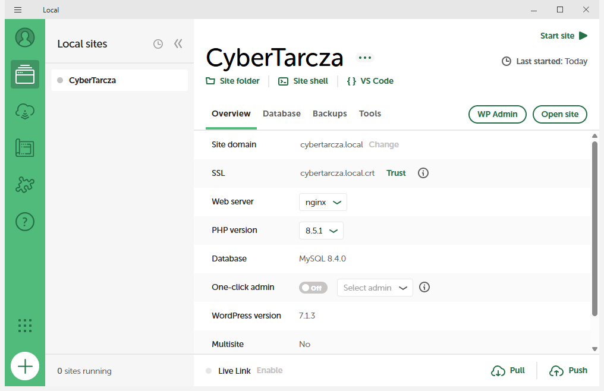
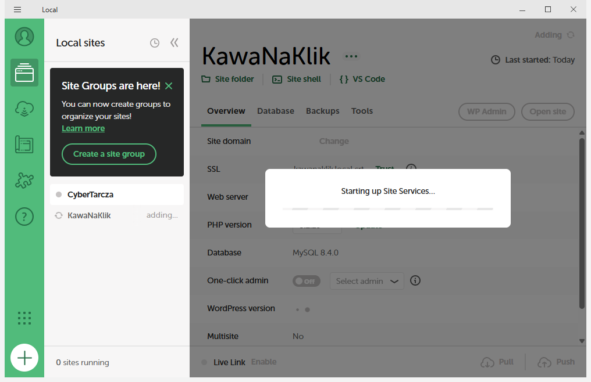
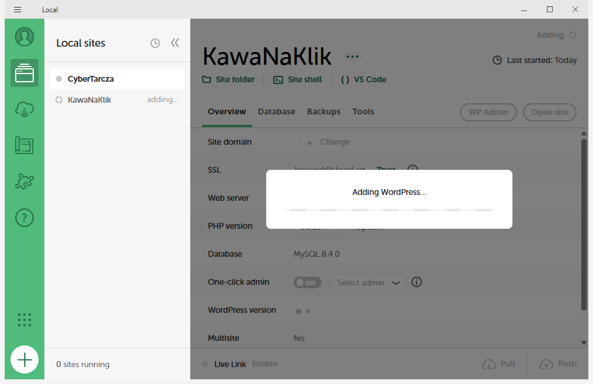
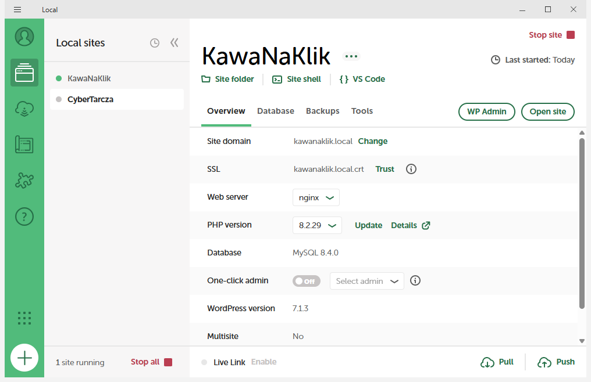
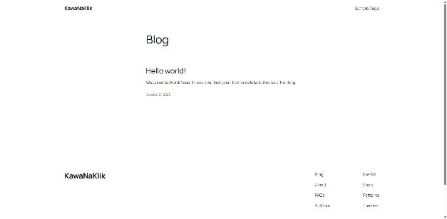
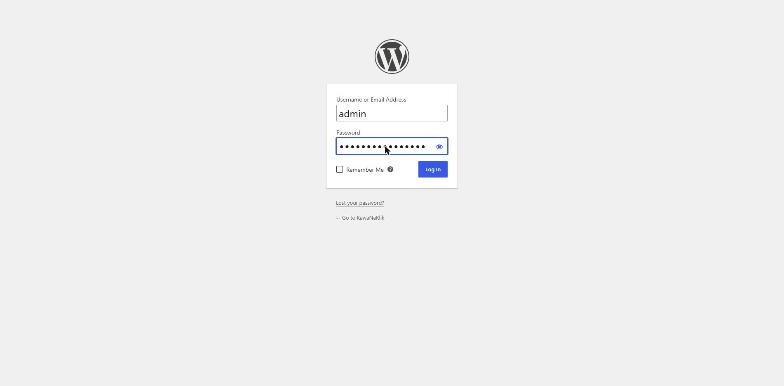
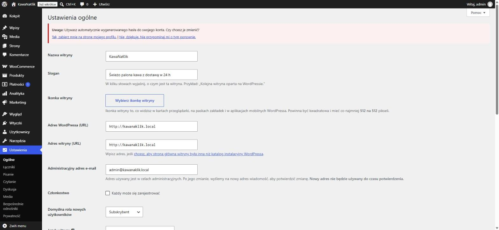
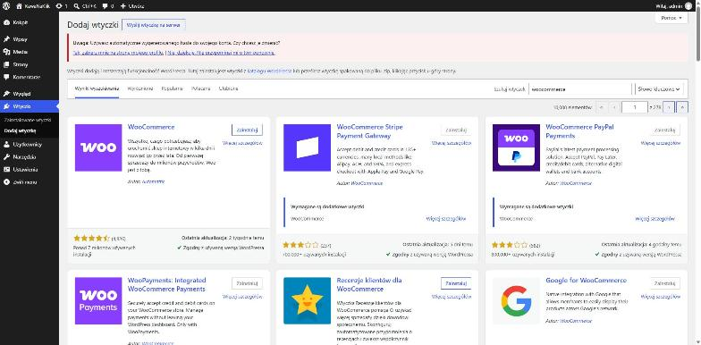
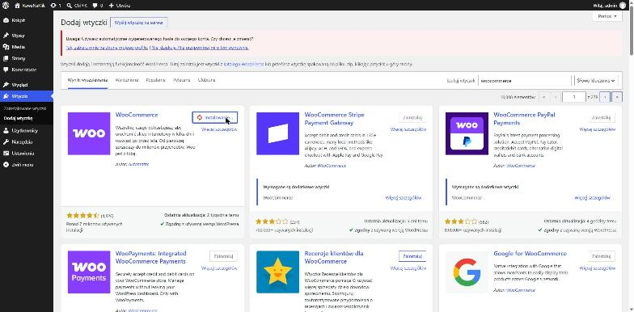
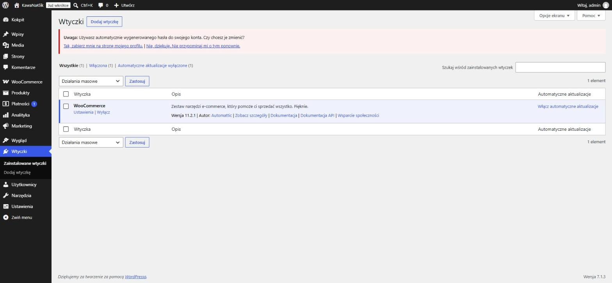
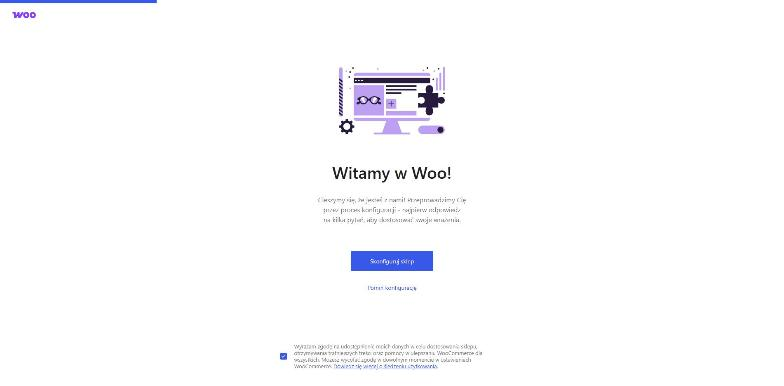
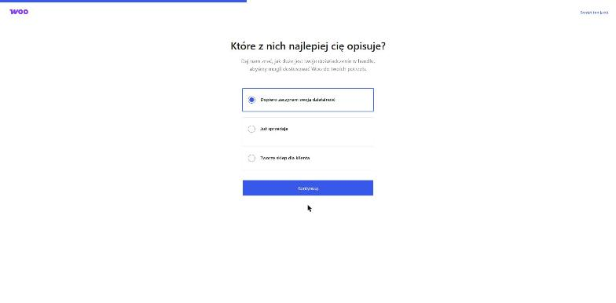
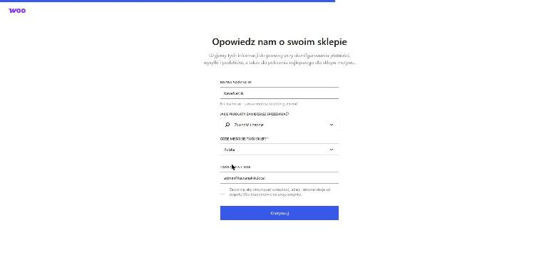
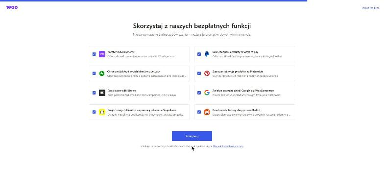
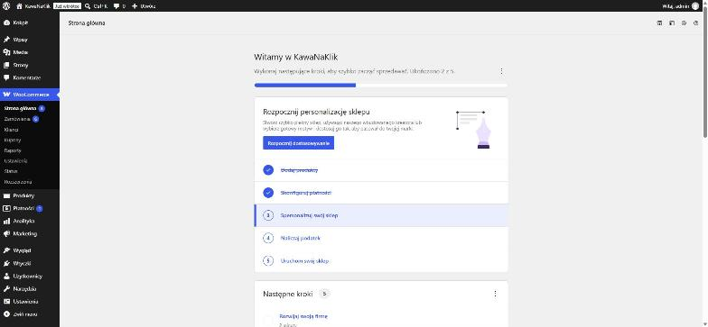
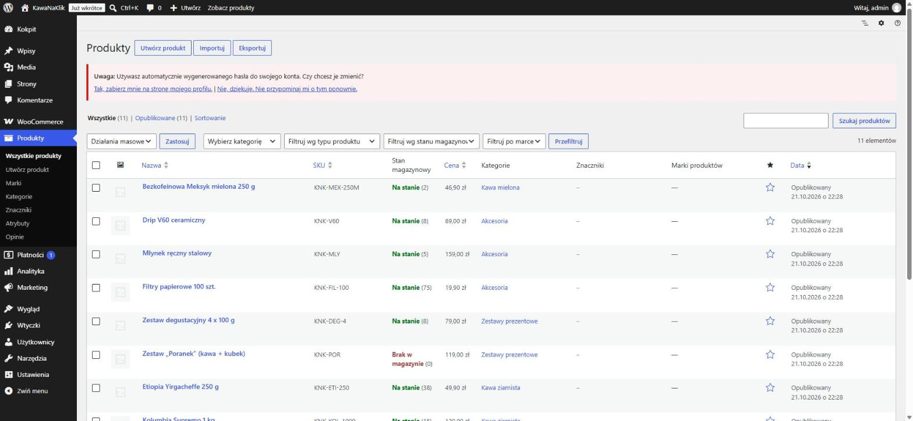
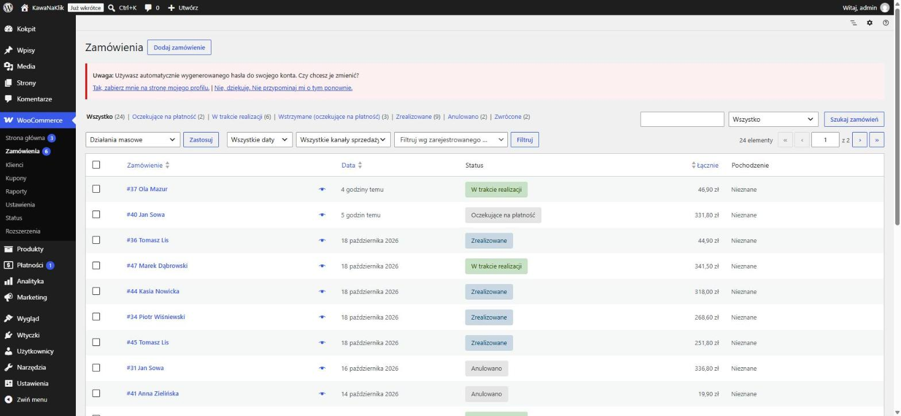
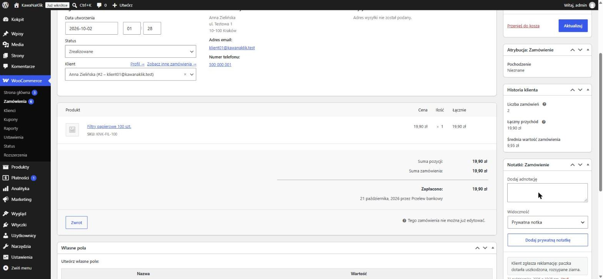
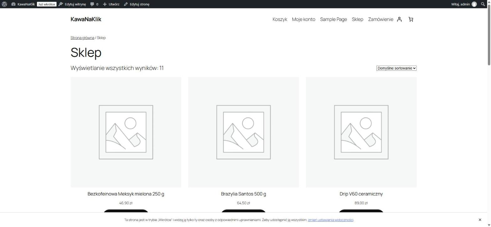
W etapie I nie korzystaliśmy z modelu językowego w samym sklepie. Asystenta AI użyliśmy jako pomocy przy pracy. Przykładowe polecenia:
„Zrób nowy projekt – nową stronę w Local dla scenariusza sklep internetowy.” „Wygeneruj syntetyczne dane dla sklepu z kawą: 11 produktów, 8 klientów, 24 zamówienia w różnych statusach, w tym notatki z reklamacją, zwrotem i pytaniem klienta. Bez prawdziwych danych osobowych – e-maile w domenie .test.”
| Element | Wynik |
|---|---|
| Strona w Local | http://kawanaklik.local – działa (nginx + PHP 8.2.29 + MySQL 8.4.0) |
| WordPress | 7.1.3, język polski, przyjazne odnośniki |
| WooCommerce | 11.2.1, waluta PLN, kraj PL, płatność przelewem i za pobraniem |
| Wysyłka | Strefa „Polska”: Kurier 14,99 zł, darmowa dostawa od 199 zł |
| Produkty | 11 w 4 kategoriach (eksport: dane_testowe/produkty.csv) |
| Klienci | 8 fikcyjnych (eksport: dane_testowe/klienci.csv) |
| Zamówienia | 24 – zrealizowane 9, w realizacji 6, wstrzymane 3, oczekujące 2, anulowane 2, zwrócone 2 (dane_testowe/zamowienia.csv) |
| Zgłoszenia klientów | 6 notatek: reklamacja, zwrot, pytanie, opóźnienie (meta _knk_typ_zgloszenia) |
| Problem | Rozwiązanie |
|---|---|
| Kreator WooCommerce sam utworzył strefę „Polska” z darmową wysyłką bez progu. Nasza strefa (kurier + darmowa od 199 zł) się z nią dublowała, a WooCommerce bierze pierwszą pasującą strefę, więc każda wysyłka byłaby darmowa (rys. 20). | Usunęliśmy automatycznie dodaną strefę. Została jedna strefa „Polska” z poprawnymi metodami (rys. 21). |
| Po wygenerowaniu zamówień stany magazynowe części produktów spadły poniżej zera (np. −7 szt.). WooCommerce przy tworzeniu zamówień zdejmuje towar ze stanu, nawet gdy go brakuje. | Ręcznie skorygowaliśmy stany do realnych wartości (0–5 szt.). Wniosek na przyszłość: w etapie IV automatyzacja musi pilnować progu minimalnego. |
| WP-CLI uruchamiany z terminala zgłaszał błąd „missing the MySQL extension”. | Strona działa na PHP 8.2, a polecenie startowało z PHP 8.5. Użyliśmy pliku php.ini i portu MySQL (10012) tej konkretnej strony z katalogu Local. |
| Panel pokazuje ostrzeżenie „Używasz automatycznie wygenerowanego hasła”. | To tylko konto testowe. Dane dostępowe są w pliku dane_testowe/dostep_testowy.txt i nie trafiają do sprawozdania. |
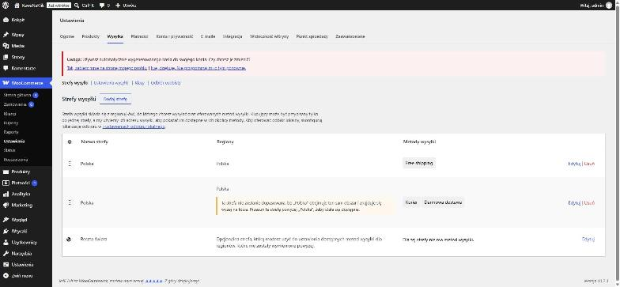
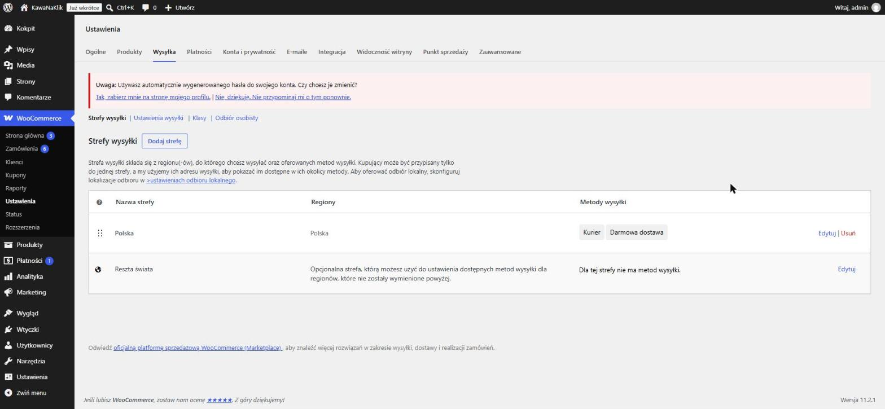
| Etap | Planowany przepływ | Narzędzia |
|---|---|---|
| II | Webhook „nowe zamówienie” z WooCommerce → n8n → nowy wiersz w arkuszu „Zamówienia” | n8n, WooCommerce REST API, Google Sheets |
| III | Wiadomość klienta → LLM klasyfikuje (reklamacja / zwrot / pytanie / inne) i ocenia priorytet → szkic odpowiedzi do akceptacji przez człowieka | n8n, Gemini API (darmowy próg) lub Ollama |
| IV | Zwrot: sprawdzenie 14 dni od daty zamówienia → status + mail. Stan magazynowy < progu → alert | n8n, Mailpit (lokalna skrzynka testowa w Local) |
| V | Dashboard: sprzedaż dzienna, statusy zamówień, liczba i typy zgłoszeń, czas reakcji | Looker Studio na danych z Google Sheets |
| Proces | Przed (ręcznie) | Po automatyzacji (cel) |
|---|---|---|
| Przepisanie zamówienia do arkusza | ok. 3 min / zamówienie | 0 min (automatycznie) |
| Przeczytanie i przypisanie wiadomości klienta | ok. 4 min / wiadomość | ok. 1 min (weryfikacja klasyfikacji AI) |
| Odpowiedź na typowe pytanie | ok. 6 min | ok. 2 min (poprawka szkicu AI) |
| Kontrola stanów magazynowych | raz w tygodniu, ręcznie | na bieżąco, alert przy niskim stanie |
| Raport sprzedaży | ok. 1 h / tydzień w arkuszu | dashboard aktualizowany automatycznie |
Założenia:
Rachunek:
Zwrot z inwestycji następuje po ok. 1 miesiącu.
| Załącznik | Plik / lokalizacja |
|---|---|
| A. Zrzuty ekranu (22 szt.) | screeny/ |
| B. Skrypt danych syntetycznych (PHP, WP-CLI) | kod/seed_kawanaklik.php |
| C. Skrypt tworzenia strony w Local (API GraphQL) | kod/utworz_strone_local.sh |
| D. Dane testowe (CSV) | dane_testowe/produkty.csv, klienci.csv, zamowienia.csv |
| E. Eksporty przepływów n8n (JSON) | do uzupełnienia w etapach II–IV |
| F. Link do dashboardu | do uzupełnienia w etapie V |
mt_srand( 2026 ); // Powtarzalne dane przy każdym uruchomieniu. $products = array( // nazwa, kategoria, cena, stan, SKU array( 'Etiopia Yirgacheffe 250 g', 'Kawa ziarnista', 49.90, 42, 'KNK-ETI-250' ), array( 'Espresso Blend 1 kg', 'Kawa ziarnista', 99.00, 7, 'KNK-ESP-1000' ), ... ); $notes = array( 'reklamacja' => 'Klient zgłasza reklamację: paczka dotarła uszkodzona, rozsypane ziarna.', 'zwrot' => 'Klient prosi o zwrot w terminie 14 dni – produkt nieotwarty.', 'pytanie' => 'Pytanie klienta: czy kawa jest odpowiednia do ekspresu kolbowego?', 'opoznienie' => 'Klient pyta o status przesyłki – brak aktualizacji od 3 dni.', ); // Uruchomienie: wp eval-file seed_kawanaklik.php